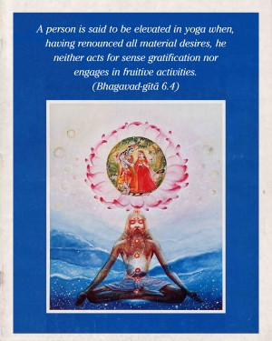
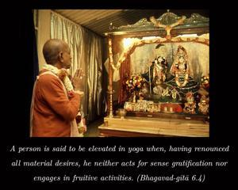
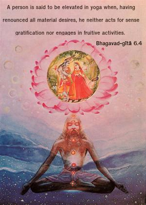
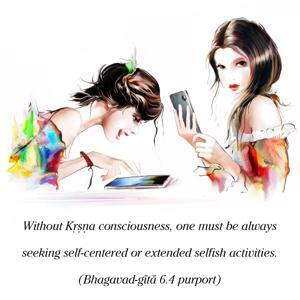

A person is said to be elevated in yoga when, having renounced all material desires, he neither acts for sense gratification nor engages in fruitive activities.




When a person is fully engaged in the transcendental loving service of the Lord, he is pleased in himself, and thus he is no longer engaged in sense gratification or in fruitive activities. Otherwise, one must be engaged in sense gratification, since one cannot live without engagement. Without Kṛṣṇa consciousness, one must be always seeking self-centered or extended selfish activities. But a Kṛṣṇa conscious person can do everything for the satisfaction of Kṛṣṇa and thereby be perfectly detached from sense gratification. One who has no such realization must mechanically try to escape material desires before being elevated to the top rung of the yoga ladder.